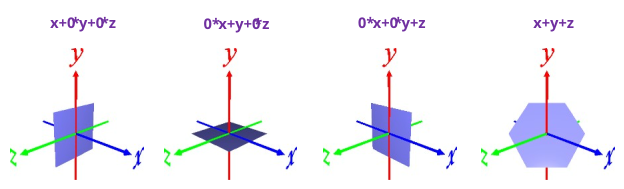
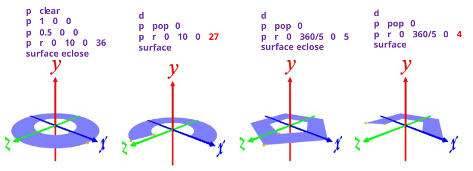
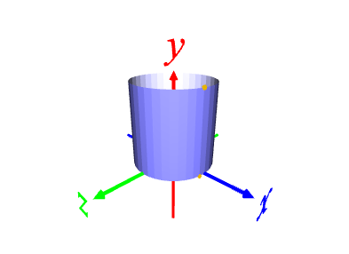
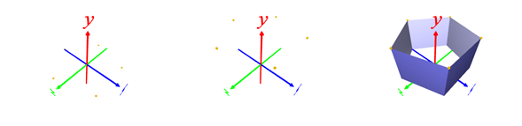
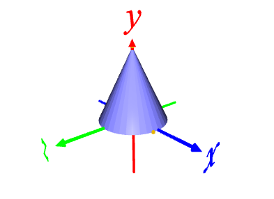

円・正多角形
2 つの 3D 座標(＝線分)を指定して, 回転, 平行移動すると平面になる。
(例)
p clear ･･･ 3D 座標を空にする
p 1 0 0 ･･･ 3D 座標 (1, 0, 0) を追加
p 0 0 0 ･･･ 3D 座標 (0, 0, 0) を追加
p r 0 10 0 36 ･･･ y 軸周りに 10°回転を36回繰り返す
surface eclose ･･･ 3D 座標への変換の繰り返し履歴で面を張る
・eclose は変換の最後と変換前の 3D 座標の間でも面を張る指定
・回転角度をマイナスにするとウラとオモテが入れ替わる
・始点と終点を入れ替えてもウラとオモテが入れ替わる
・Visualizer 画面をクリック, Lキー押下で照明 on/off を切り替える

環・扇
回転中心を含まない 2 つの 3D 座標(＝線分)を指定して, 回転すると環になる。
回転のトータルが 360°に満たないと, 扇になる。
(例)
p clear ･･･ 3D 座標を空にする
p 1 0 0 ･･･ 3D 座標 (1, 0,0) を追加
p 0.5 0 0 ･･･ 3D 座標 (0.5,0,0) を追加
p r 0 10 0 36 ･･･ y 軸周りに 10°回転を36回繰り返す
surface eclose ･･･ 3D 座標への変換の繰り返し履歴で面を張る

2 つの 3D 座標(＝線分)を指定し, 線分と直交する方向に移動すると柱ができる
(例)
p clear ･･･ 3D 座標を空にする
p 0.5 0 0 ･･･ 3D 座標 (0.5, 0, 0) を追加
p 0.5 1 0 ･･･ 3D 座標 (0.5, 1, 0) を追加
p r 0 10 0 36 ･･･ y 軸周りに 10°回転を 36 回繰り返す
surface eclose ･･･ メッシュ化

(例)
p polygon 5 1 0 ･･･ 半径 1 の円周上に 5個点を作成する。0 は厚みなしの指定
p t 0 1 0 2 ･･･ y 方向に 1 移動
※ p t (xオフセット) (yオフセット) (zオフセット) [(回数)]
※ 回数指定がないと, 移動のみで面を張れない。
※ 回数 2 以上だと, 移動前＋(回数－１)の移動した点のコピーが作成され面を張れる。
surface ･･･ メッシュ化

2 つの 3D 座標(＝線分)を指定し, 線分と直交でも平行もでない方向に回転すると錐ができる
p clear ･･･ 3D 座標を空にする
p 0.5 0 0 ･･･ 3D 座標 (0.5, 0, 0) を追加
p 0 1 0 ･･･ 3D 座標 (0, 1, 0) を追加
p r 0 10 0 36 ･･･ y 軸周りに 10°回転を 36 回繰り返す
surface eclose ･･･ メッシュ化
3D座標を指定する順番、回転の向きにより、面のウラとオモテが入れ替わる。
・p2 reverse (p/e)
・p2 transpose
でもウラとオモテを変えられる。
